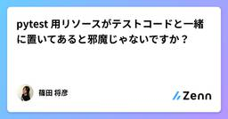
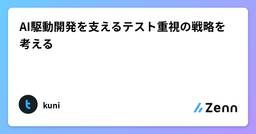
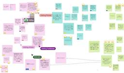
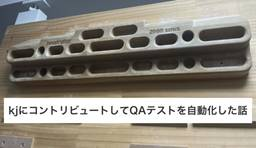
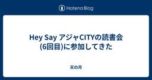
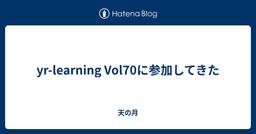
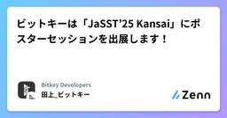
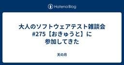
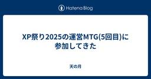

直近1週間の更新
6/29 (日)
2025年6月のふりかえり  天の月
天の月
2025年も半年が終わったので、ふりかえりをしていこうと思います。 仕事 社外活動 プライベート 仕事 他の領域と比べてバランスが崩れ気味だという話をちょこちょこ書いていたのですが、今月は完全に崩れていてほぼ仕事という感じでした。 急転直下の展開といいますか、自分でも本当にまったく予想していない展開になって、その展開自体はすごくチャレンジングだし楽しみもあるものだったのですが、大分重たい仕事でもあって数日間は本当に仕事が自分に務まるのか非常に不安になりました。(割とポジティブにものを考えるのは得意だしリフレーミングみたいなのも割とできるタイプなので、人生で仕事をしていて始めてそのような感情にな…
15時間前
受け入れテスト観点の備忘録  Zennの「Test」のフィード
Zennの「Test」のフィード
バックエンドエンジニアのための受け入れテスト観点集 はじめに私も含め普段の業務でUI設計や実装に携わる機会の少ないバックエンドエンジニアにとって、受け入れテストで何を確認すべきかは悩ましい問題です。そこでテストの重要な観点を体系的に整理しました。 受け入れテストの位置付け 受け入れテストの目的システムがユーザーの要求を満たしているかの最終確認本番環境での実際の使用場面を想定したテスト開発チーム内のテストでは見落としがちな観点の検証 単項目テスト 余白と配置のバランスUIの品質を左右する重要な要素として、まず余白と配置の統一性を確認します。余白関連の...
21時間前

pytest 用リソースがテストコードと一緒に置いてあると邪魔じゃないですか？ Zennの「Test」のフィード
テスト用リソースがテストコードと一緒に置いてあると邪魔じゃないですか？テスト用リソースを使用するテストはそれほど多くありませんテストコード内にテスト用リソースを配置すると、エクスプローラーのツリー表示領域がテスト用リソースで埋め尽くされてしまいます:tests/└── some_test_package/ ├── some_test_module_a/ (テスト用リソース) ├── some_test_module_b/ (テスト用リソース) ├── some_test_module_c.txt (テスト用リソース) ...
21時間前

AI駆動開発を支えるテスト重視の戦略を考える Zennの「Test」のフィード
AIと人間が効率的に協働するための「テスト重視の戦略」を考えたので紹介します。一般論と自身の経験から有効な戦略をまとめ、それらを実践するためのサンプルプロジェクトも作成しました。なお、本記事は主にRDBを含む Webバックエンド を前提としています。説明の都合上、具体例はGo言語で示しますが、アーキテクチャやテスト戦略の考え方は他の言語でも応用可能です。 🟦 AIコード生成の現実と課題 🟠 規模による制約ある程度大きなソフトウェアになると、全てをAIに任せることは現実的ではありません。参考記事： ソフトウェア規模とAIに任せられる範囲 🟠 AIが生成するコードの特性...
1日前
6/28 (土)

スクラムフェス金沢2025のスタッフふりかえりをしてきた 天の月
タイトルの通り、スクラムフェス金沢2025のスタッフふりかえりをしてきたので、今日はその様子を書いていこうと思います。 ふりかえりで出た話題たち ふりかえりで議論した話題たち 情報保障 Yanagiさん頼みの改善 タスク分担 真面目な運営 当日人手が足りなかった ふりかえりで出た話題たち 元々Discordのスレッド内にちょこちょこ溜めていたのですが、来年以降も見やすいようにということでMiroボードに転記しました。追加で幾つか付箋も出て、結果的には以下のようになりました。 ふりかえりで議論した話題たち 情報保障 今回の取組という点では、ノウハウもお金もない中で最善の活動はできていたのかな、と…
2日前

BigQueryのCronJob向けQAテストを自動化した話 1
1 QA - エムスリーテックブログ
QA - エムスリーテックブログ
AI・機械学習チームの鴨田です。このブログはAI・機械学習チームブログリレー 9日目の記事です。 年末休みに話題の書籍『Tidy First?』を読みました。コード整理の実践的な手法や作業粒度によるトレードオフなどを学び、「最初から完璧な設計なんてできるわけない。コード品質を保つための整理が大切だよなー」と改めて実感しました。 品質を保ちながら開発速度を上げるには、信頼できるテストが欠かせません。これは開発における普遍的な真理ですが、特にQA環境でのテストは地道で骨の折れる作業になりがちです。皆さんの現場でも、似たような課題を抱えているのではないでしょうか？ 今回は手動で実施しているQAテスト…
2日前
『テストの7つの原則』 〜 パート⑤ 〜 Zennの「Test」のフィード
はじめに現在、アプリ開発者としてプロダクトの持続的な成長やユーザーへのコミットに寄与するためにも、SDLC全体を見渡して開発をすること、および、それにはテストに関する体系的な知識が必要だと考え、それを効率良く学べるJSTQB Foundation Levelの資格試験の勉強をしていました。この記事ではそこでの学びをアウトプットしたと思います。今回はその中でも「テストの7つの原則」の一部について記事にしたいと思います。なお今回は テストの弱化こちらの原則について記事にしてみようと思います。 テストの弱化とは開発に際してはテストケースを設計することが多...
2日前
『テストの7つの原則』 〜 パート⑤ 〜  ソフトウェアテストタグが付けられた新着記事 - Qiita
ソフトウェアテストタグが付けられた新着記事 - Qiita
はじめに現在、アプリ開発者としてプロダクトの持続的な成長やユーザーへのコミットに寄与するためにも、SDLC全体を見渡して開発をすること、および、それにはテストに関する体系的な知識が必要だと考…
2日前
6/27 (金)

Hey Say アジャCITYの読書会(6回目)に参加してきた
天の月
表題のイベントに参加してきたので、会の様子を書いていきます。 今日からはソフトウェアテスト徹底指南書 〜開発の高品質と高スピードを両立させる実践アプローチを読むことになりました。 https://www.amazon.co.jp/dp/B0FBG4GM9M 書籍決め 読書会 モダンな開発に必要なテストの知識・技術 謝辞に出てくる人の豪華さ 優れたテスト チームのテスト能力 ソフトウェアテストの定義 テストが削減されがちな理由 制約があるからこそ 書籍決め 今日は書籍を決めていこうという会だったのですが、参加者が全員「ソフトウェアテスト徹底指南書 〜開発の高品質と高スピードを両立させる実践アプロ…
3日前
生成AIをチューニングしたらテスト設計できるかな？ 2 Zennの「Test」のフィード
こんにちは！アルダグラムでQAのお手伝いをしているmiyashitaです！生成AIの活躍が著しい現代、私もQA業務でのAI活用法を模索している日々。。。元々既存のデフォルトAIを活用していたが、どこか精度が上がり切らず頭打ちを感じていたが、最近AIの「チューニング」をすることを思い立ち、少し試してみた。すると、一気にAIの回答精度を上げることができました😎今回はその効果をBefore / Afterでご紹介します。 今回のゴール今回は、テスト観点の出力までに絞ってAIのチューニング効果を検証してみる。 試したAIツール🤖今回はこの2つで検証していく。Google G...
3日前
生成AIをチューニングしたらテスト設計できるかな？ 2 Zennの「QA」のフィード
こんにちは！アルダグラムでQAのお手伝いをしているmiyashitaです！生成AIの活躍が著しい現代、私もQA業務でのAI活用法を模索している日々。。。元々既存のデフォルトAIを活用していたが、どこか精度が上がり切らず頭打ちを感じていたが、最近AIの「チューニング」をすることを思い立ち、少し試してみた。すると、一気にAIの回答精度を上げることができました😎今回はその効果をBefore / Afterでご紹介します。 今回のゴール今回は、テスト観点の出力までに絞ってAIのチューニング効果を検証してみる。 試したAIツール🤖今回はこの2つで検証していく。Google G...
3日前
MagicPod MCPサーバーを試してみた ─ MCPサーバーならではの体験 Zennの「QA」のフィード
株式会社Hacobu（以下、Hacobu）でQAエンジニアをやっている、かわせです。2025年4月、MagicPodから MagicPod MCPサーバー（ベータ） がリリースされました。GUIベースの操作に加えて、API経由で一括実行の操作やデータ取得ができるようになり、テスト自動化の運用がさらに進化する可能が広がります。リリースから少し間が空いてしまいましたが、社内のQAエンジニアにもAIアシスタント「Cursor」のアカウントが付与されたことをきっかけに、さっそく試してみました。 セットアップ時の注意点：社内セキュリティとの調整CursorとMagicPod MCPサ...
3日前
6/26 (木)
WACATE参加者宛にリマインドメールをお送りしています ブログ - WACATE
今回参加となった皆さん全員に、6月11日と6月26日の2回に分けてリマインドメールをお送りしています！ 万が一届いていない場合は、お手数ですが wacate[at]googlegroups.com に連絡をくださいませ。投稿 WACATE参加者宛にリマインドメールをお送りしています は WACATE に最初に表示されました。
4日前
PR粒度設計はプロンプトで制御可能か  yuden
yuden
Skillnote社の藤井氏の以下のnoteにヒントを得て、PR粒度設計をClaudeに指示として与え、複数の要望が混在したIssueを適切なPR粒度に分割することが可能か簡単に調査をしてみました。続きをみる
4日前
Next.js Server Actionsの負荷テストをしてみた Zennの「Test」のフィード
はじめにNext.js の App Router で導入された Server Actions は、フォーム送信やサーバーサイドでの処理を簡潔に記述できる優れた機能です。(v15から明示的にServer Actionsという表現は無くなってます。)しかし、本格的な運用環境でパフォーマンスを検証したい場合、Server Actions に対する負荷テストの情報がまだあまり出回っていないのが現状です。私は1つのプロジェクトで、Next.jsでフロントエンドもバックエンドもフルスタックに開発しているのですが、こちらの負荷テストを行う必要がありました。そこでこの記事では、実際に私が試行...
4日前
あなたの会社にも必要になる。今こそ知りたい外国人採用の基本と最前線 PTW／ポールトゥウィン【公式】
ソフトウェアテストやカスタマーサポートなど、多岐にわたるBPO（Business Process Outsourcing）事業を幅広い業界に提供し、それぞれの分野で専門知識と業界ノウハウを蓄積してきたポールトゥウィン。今回スタートする新コンテンツ「Knowledge Hub by PTW」では、各事業の現場で得られた知見をもとに業界の課題や動向を読み解き、今後の成長戦略に必要な視点をポールトゥウィンの担当者がわかりやすく解説していきます。豊富な実績に裏打ちされたノウハウを惜しみなく披露して、業界に関わるすべての人にとって有益な情報を発信してまいります。第一回は、外国人採用支援サービス「Stepjob(ステップジョブ)」事業の事業部長、行平澄子にマーケット事情から社会背景まで多くの企業が人材不足に喘ぐ中で外国人採用が注目を集める理由について話を聞きました。続きをみる
4日前
QAはアウトカム志向が大事な気がする yuden
※この記事はyudenが社内でだいたい毎週月曜日のランチタイムにやっているライトニングトーク「わいがや」を記事に起こしたものです。ベストプラクティスは過去の遺産続きをみる
4日前

yr-learning Vol70に参加してきた 天の月
https://yr-camp.connpass.com/event/360536/ こちらのイベントに参加してきたので、会の様子と感想を書いていこうと思います。 エクストリーム近況 再帰版のfizzBuzzLoop解消 全体を通した感想 エクストリーム近況 近況報告をしていたのですが、エピソードが色々とおかしくて陥っている状況もめちゃくちゃだったので、エクストリーム近況報告だという話が出ていました笑 内容的にはNDAを結んでいる状態だったのでほとんど何も書けないのですが、アジャイルコーチが特定下の状況でまったく機能しなくなる話や、変に考え方や経験に対してこだわりが出てしまっている人よりかは新…
5日前
6/25 (水)

ビットキーは「JaSST’25 Kansai」にポスターセッションを出展します！ Zennの「QA」のフィード
はじめにこんにちは。株式会社ビットキー Software QAチームからお知らせです。この度ビットキーは、6/27(金)に開催の「JaSST’25 Kansai」にポスターセッションを出展いたします✨今回は、参加者の皆様と一緒に創り上げるインタラクティブな企画をご用意しました👏🏻この記事では、皆様に楽しんでいただくための企画内容を一足先にご紹介いたします。 JaSSTとはJaSST（ジャスト）は、NPO法人ASTER （ソフトウェアテスト技術振興協会）が運営するソフトウェア業界全体のテスト技術力の向上と普及を目指すソフトウェアテストシンポジウムです。※JaSST：...
5日前
Claude System Promptを見て思ったこと yuden
※この記事はyudenが社内でだいたい毎週月曜日のランチタイムにやっているライトニングトーク「わいがや」を記事に起こしたものです。Claudeはドキュメントページでコアシステムプロンプトを公開しています。続きをみる
5日前
IT初心者でもわかる！モックの基本と活用方法 Zennの「Test」のフィード
初めにこんにちは！新卒2年目の矢野です！この記事では、IT初心者でも理解しやすいように、「モック(Mock)」という便利なツールについて解説します。モックは、プログラミングの学習やチーム開発でとても役立つ考え方です。具体的な使い方や実例を交えながら紹介していきます。 1. モック(Mock)とは？モックとは、プログラムの中で**「本物の代わりに使う偽物の機能」**のことです。例えば、外部サービスやデータベースがまだ完成していないとき、その部分を「モック」として作ることで、他の部分の開発やテストを進められます。イメージ： モックは映画のセットのようなものです。実際に背景や...
5日前
テスト分析：文書で未定義の外部仕様に気づくコツ 1 Zennの「QA」のフィード
はじめに私の経験上、テスト設計のために必要な外部仕様がドキュメントに全て網羅的に記載されていることは多くありません。そのため、前回の記事で少し触れた通り、実際の業務ではドキュメントに記載のない情報に気づく必要があります。そこで、本記事ではドキュメントに不足している情報、特に未定義の外部仕様（システムの振る舞い）に気づくコツをいくつか紹介します。なお、定義された外部仕様の妥当性確認（顧客が求める品質や性能を実際に満たすかどうか）については、本記事のスコープ外となります。 欲しい情報を意識して文書を読むテストに関する成果物のテンプレートが決まっている場合、ドキュメントを読む際...
5日前
スクラム祭りの打ち合わせ(42回目)をしてきた 天の月
aki-m.hatenadiary.com こちらの打ち合わせをしてきたので、会の様子と感想を書いていこうと思います。 バックログ更新 Confengineをアップデート ドラフト会議日程決め 運営メンバーをGoogle Groupsに追加 Discordコメントの返信 地域トラック確認 スポンサーメール返信 バックログ更新 直近やる必要がある作業が少し溜まってきたので、バックログを更新しました。ついでに幾つかの作業はクローズができそうだったのでクローズをしました。 また、最近毎回やっている作業に関しては固定で話す内容のリストに組み込むことにしました。 Confengineをアップデート Co…
6日前
6/24 (火)

大人のソフトウェアテスト雑談会 #275【おきゅうと】に参加してきた 天の月
https://ost-zatu.connpass.com/event/360210/ 新規事業の要注意点 新規事業では人が多すぎると逆に難しくなるという話や、ビジョンをいじりだしたらそれは注意したほうがいいという話がありました。(自社のビジョンは顧客にとってまるで関係がない) おおひらさんのプロポーザル おおひらさんがスクラムフェス三河に何をプロポーザルとしてだしてほしいのか？というのを皆で出し合っていきました。 QAやテスターの歴史 製造業のQAの歴史 テスターやmiwaさんへの愛 スクラムマスターにQAがなることの何がいけないのか？ Alloyを使っている話 といった候補があがっていまし…
6日前
業界未経験からテストエンジニアへ転身――品質保証業務の魅力とは（後編） テクバン株式会社 品質サービス事業部 採用チーム
業務システム開発、インフラ構築、ネットワーク構築などさまざまなサービスを展開している、独立系システムインテグレーター（SIer）のテクバン株式会社（以下、テクバン）。そのサービスのひとつである品質保証業務では、開発したシステムが規定の品質を満たしているかを確認。お客様に安心と信頼を提供する、非常に重要な役割を担っています。今回は、業界未経験ながら品質保証業務に携わり、品質ソリューション事業部でキャリアを築いてきた尾舘 誠一朗氏に、これまでの経歴と、品質保証業務の魅力を聞きました。また、同事業部の事業部長 山内 健司氏に、テクバンでリーダーとして活躍する尾舘氏の実像を語っていただきました。続きをみる
6日前
業界未経験からテストエンジニアへ転身――品質保証業務の魅力とは（前編） テクバン株式会社 品質サービス事業部 採用チーム
業務システム開発、インフラ構築、ネットワーク構築などさまざまなサービスを展開している、独立系システムインテグレーター（SIer）のテクバン株式会社（以下、テクバン）。そのサービスのひとつである品質保証業務では、開発したシステムが規定の品質を満たしているかを確認。お客様に安心と信頼を提供する、非常に重要な役割を担っています。今回は、業界未経験ながら品質保証業務に携わり、品質ソリューション事業部でキャリアを築いてきた尾舘 誠一朗氏に、これまでの経歴と、品質保証業務の魅力を聞きました。また、同事業部の事業部長 山内 健司氏に、テクバンでリーダーとして活躍する尾舘氏の実像を語っていただきました。続きをみる
6日前
プロジェクト管理ツールとしての「議事録」｜「言った・言わない」をなくす！”使える”議事録作成の秘訣  品質 | Sqripts
品質 | Sqripts
こんにちは、QAコンサルタントのW-Hです。 プロジェクトの遂行においては、コミュニケーションの一環として、定例会議やアドホックな会議が行われていると思いますが、私は会議の「議事録」を「プロジェクト管理ツール」の１つとし...The post プロジェクト管理ツールとしての「議事録」｜「言った・言わない」をなくす！”使える”議事録作成の秘訣 first appeared on Sqripts.
6日前
チームで参加！Pepウォーキング テスト自動化メンバー｜日本ナレッジ株式会社
こんにちは。テスト自動化メンバーのS.Kです。今回は「Pepウォーキング」というイベントに参加したメンバーの体験をヒアリングし、その様子をレポートします。続きをみる
6日前
テスト自動化のレールを敷く -MagicPod運用設計の舞台裏 Zennの「QA」のフィード
株式会社Hacobu（以下、Hacobu）でQAエンジニアをやっている、かわせです。Hacobuでは、E2Eテスト自動化にノーコードツールである、MagicPodの導入をしました。「テスト自動化」と聞くと、品質向上・生産性向上といったポジティブなワードが並ぶかと思います。しかし、ノーコードツールによる自動テストの導入と運用には、想像以上の落とし穴があるのも事実です。今回の記事では、MagicPod導入初期に私たちが直面した課題と、それをどう乗り越え、継続的に運用できるテスト基盤を設計したかについて紹介します。同じようにノーコード自動化を検討しているチームにとって、アンチパターン...
6日前
6/23 (月)

XP祭り2025の運営MTG(5回目)に参加してきた 天の月
XP祭りの運営MTG(5回目)に参加してきたので、会の様子を書いていこうと思います。 出版社対応 Confengineの状況確認 Kent Beckとのランチ会 次回 出版社対応 XP祭りはいつも書籍支援をいただいているのですが、支援いただけないかのお願いをどの出版社の方々向けにしていくか？というのを簡単に話していきました。(基本的には昨年献本いただけた会社さんに声をかけていく形でいきました) 詳細な活動に関しては、希望者を募ってそこで一緒にやりましょうという話をしました。 Confengineの状況確認 confengine.com 今年は公募が8月までということもあり、まだ期限的には余裕が…
7日前
Golangでテストコードに入門してみた Zennの「Test」のフィード
今回はGolangでのテストコードに入門してみました。私自身普段あまりGolangは使ってこなかったのですが、今回使う気概があり、テストコードが必要だったので入門してみました。 早速やってみる シンプルな例で。。。まずはプロジェクトの初期化をします。goenvを使っているので、以下のようにして環境を立てました。mkdir go_test_prac && cd go_test_pracgoenv local 1.22.3まずはシンプルな四則演算を実装しているコードを作成しました。func.gopackage mainimport "fmt"fu...
7日前

多元的無知をQAエンジニアの業務で考えてみる
Zennの「QA」のフィード
こんにちは。SODAでクオリティエンジニアをやっているokauchiです。多元的無知という言葉を知りました。「他の誰かは分かっているはず」と思い込み、自分の疑問や違和感を黙ってしまう心理現象です。自分がわかっていないだけならまだしも（もちろん良くはありませんが）、チーム全体で「誰かが理解しているだろう」と思い込み、実は誰も正しく把握していなかった、ということも起こりえます。とくにQAエンジニアの業務においても見過ごせない問題です。QAエンジニアの視点から多元的無知が引き起こすリスクと、それを防ぐための方法を考えてみます。 テストの現場に潜む多元的無知のリスクQAエンジニアはテスト...
7日前